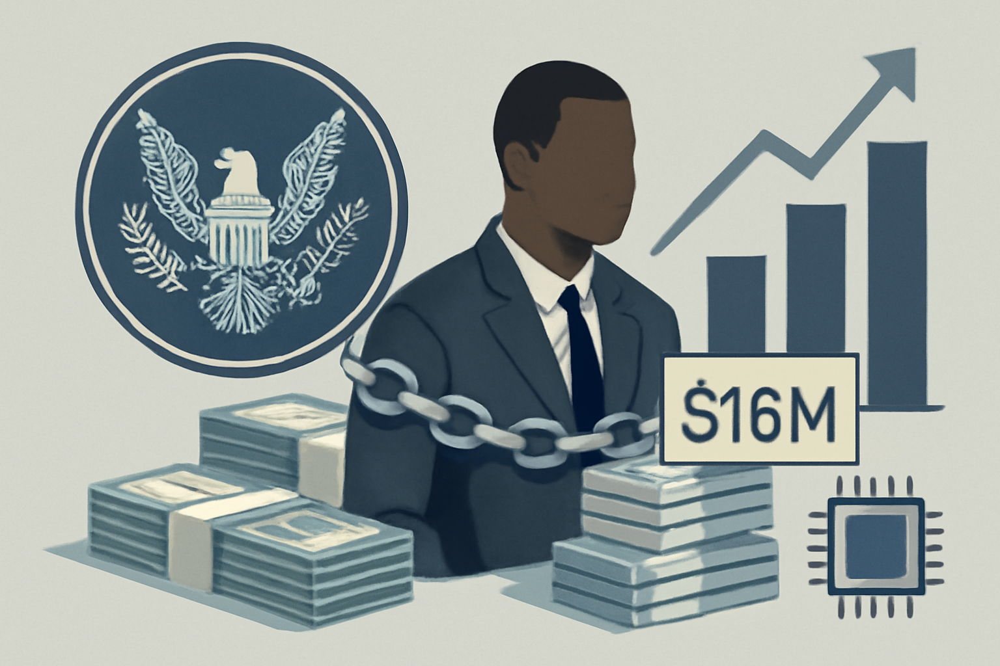

08 미국 증권거래위원회(SEC) 보도일 2026.09.10
SEC, 1,600만 달러 폰지 혐의로 창업자와 회사 2곳 제소

이번 건은 감독 규정이 아니라 집행 사건이다. SEC가 개인 1명과 회사 2곳을 직접 제소했다. 핵심은 약 1,600만 달러를 어떻게 모았는지와, 그 모집 방식이 사기였는지다.
무슨 일이 있었나
SEC는 Ernest Ossei Boateng과 그가 통제한 뉴저지 소재 회사 2곳을 1,600만 달러 규모 폰지 사기 혐의로 제소했다. 대상 회사는 Intercontinental Wealth Network LLC와 I Wealth Network LP다. SEC는 이들이 200명 이상에게서 약 1,600만 달러를 모았다고 밝혔다. 원문 발췌에는 여기까지만 나온다.
왜 지금 나왔나
원문은 배경을 밝히지 않았다.
규칙의 내용과 적용 범위
이 기사는 규정 개정이 아니라 집행 조치다. SEC는 특정 행위를 위법하다고 보고 소송을 제기했다. 원문 발췌에는 적용 법조문이나 추가 제재 내용이 나오지 않는다.
국내와의 접점
원문은 국내 적용에 대해 언급하지 않았다.
우리 업무로 옮기면
사기성 자금 모집은 상품 심사와 고객 확인 절차를 다시 보게 만든다. 영업, 제휴, 수탁, 계좌 개설 팀은 모집 구조와 자금 흐름을 더 촘촘히 확인할 필요가 있다. 특히 고수익 약속, 복잡한 법인 구조, 투자자 자금의 순환 패턴은 점검 항목에 넣을 만하다. 이번 발췌에는 피해 회수나 자산 동결 여부가 없어서, 실제 제재 강도는 추가 확인이 필요하다.
주요 용어
원문 정보
제목: SEC Charges Founder and His Two New Jersey-Based Companies in Alleged $16 Million Ponzi Scheme
보도일: 2026.09.10